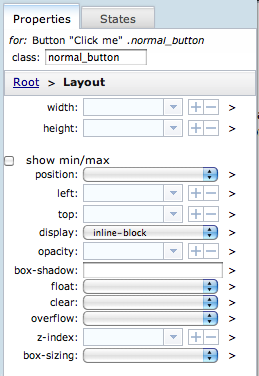
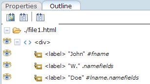

Using the Properties Palette
Note: In this documentation, the term "widget" refers to anything in the Maqetta Widgets palette, including HTML elements.
The Properties palette is located on the right side of the Maqetta workspace. When a file is opened in the Page Editor, the Properties palette will display panes that contain fields for setting properties on widgets and HTML elements (e.g. styles, events, widget-specific properties and HTML attributes).
All changes made in the Properties palette apply only to the currently selected widget, which is displayed at the top of the Properties palette and highlighted with a dark border on the Page Editor canvas. Any changes made from the Properties palette will be applied to this widget.
Topmost section: Current Selection and 'class' attribute
At the top of the Properties palette are two rows:

- The first row (with the word "for:") shows information about the currently selected widget, including the type of widget (e.g., "Button"), in some cases the widget's text content (e.g., a button's label text, such as "Click me"), any custom CSS classes defined on the widget's 'class' attribute (e.g., ".normal_button"), and (if the widget has an ID) the widget's ID (e.g., "#myid").
- The second row provides a text input area for the widget's 'class' attribute. We recommend that, whenever you need to change CSS properties on a widget, you define one or more custom CSS classes and create new style rules in your app.css file and place any CSS property changes in those new style rules. (These techniques are explained in "Creating Style Rules with app.css".)
Properties Palette Slide-in Panes
Underneath the topmost section is the main editing area for the Properties palette. This main editing section has 3 levels of slide-in/slide-out panes:
-
Root level - The Root level of the Properties palette shows buttons for the various sub-sections for different groups of properties. You descend into sub-sections by clicking on one of the buttons:

-
Property Section panes - The various sub-section panes in the Properties pane (Common section, Widget-Specific section, etc.) show a list of collection of related properties. For example, below is a picture of the Layout section.

Notice that after descending into a sub-section, a breadcrumb control appears towards the top of the palette which allows you to return to a higher-level pane (e.g., "Root").
At the right side of each property row is a ">" icon which will allow you to descend into the "Detailed CSS" pane corresponding to that particular property:
-
Detailed CSS panes - Each CSS property has its own Detailed CSS pane that shows the list of stye rules that apply to this property on this particular widget. Below is a picture of the Deatiled CSS pane corresponding to the 'width' property:

For more information on the Detailed CSS panes, see "Creating Style Rules with app.css".
Controls for Changing Values on Particular Properties
- Drop-down input field
- You can either type in a value or select one of the pre-set values in the drop-down list.
As a guide, Maqetta provides the most commonly used CSS units for each property.
You can select one of the drop-down values and then modify the value as applicable for your particular widget. auto is also provided for CSS properties for which that keyword is applicable (e.g.
width:autofor centering, oroverflow:autofor clearing floats). - Plus and Minus Controls
- The plus and minus controls
 are to the right of numeric input fields. When there is a numeric value set in the field, clicking on the plus control will increment the value, and clicking on the minus control will decrement it. This is handy for fine-tuning the values as you view the effect on the selected widget in the page editor.
are to the right of numeric input fields. When there is a numeric value set in the field, clicking on the plus control will increment the value, and clicking on the minus control will decrement it. This is handy for fine-tuning the values as you view the effect on the selected widget in the page editor. - Go To Detailed CSS Control
- The ">" icon to the far right of each property will take you to the Detailed CSS pane corresponding to the given property. For more information on the Detailed CSS panes, see "Creating Style Rules with app.css".
Properties Sections
Common Properties
The Common pane contains core HTML attributes that are common to all widgets and HTML elements.
| Common | |
|---|---|
| id | This is the standard 'id' attribute that is available on all elements in HTML. |
| title | Browsers typically display this string as a tooltip when the mouse hovers over the given element. |
Example showing how id and class are displayed in the Outline palette:
- (case 1) <label> "John": id="fname"
- (case 2) <label> "W.": class="namefields"
- (case 3) <label> "Doe": id="lname", class="namefields"
In the Outline palette you should see:

Widget Specific Properties
The Widget Specific pane contains properties that are specific to the type of widget that is selected. For example, most of the control widgets have a Disabled checkbox because controls can be enabled or disabled. Many of the container widgets have URL and Content properties where you can specify the content for the container. Some other examples: Check Box and Radio Button have a Checked property, MultiSelect has a Size property, and Calendar has a Day Width property.
Event Properties
The Events pane contains properties that control user events such as onclick, onmouseover and onfocus. In Maqetta you can use events to trigger a new application state, so these properties work in conjunction with the States palette. You define your states first, using the States palette, and then they will show up in the drop-down lists for all the event properties.
For example, say you want to display a tooltip dialog on a Button mouseover event. First configure a state that displays the tooltip. Then, with the Button selected, go to the onmouseover property in the Properties palette and select your tooltip state from the drop-down. See the tutorial Build a Task Manager (Application States) for a detailed example showing how to do this.
| Events | |
|---|---|
| all events | Specify the new state to display when the event occurs. More on events.... |
Layout Properties
These are CSS properties that control the dimension and positioning of widgets and HTML elements.
Notice how changes made in the Properties palette immediately affect the widget on the canvas (after you hit Enter or click off the input field). Likewise, changes you make by manipulating the widget on the canvas will immediately update the values in the corresponding fields in the Properties palette. For example, when you resize a widget on the canvas, the height and width is updated in the Properties palette.
| Layout | |
|---|---|
| width | Widget width and height in CSS units. |
| height | |
| Check this box to display the min/max properties. These properties overrule the normal width and height. Learn more... | |
| min-width | Minimum width for this widget. Overrules the normal width. |
| max-width | Maximum width for this widget. Overrules the normal width. |
| min-height | Minimum height for this widget. Overrules the normal height. |
| max-hegith | Maximum height for this widget. Overrules the normal height. |
| position | This setting overrides the Maqetta system-wide positioning (see Preferences under the Maqetta Menu Bar) for this particular widget. Maqetta recommends using the default Maqetta positioning, then use this setting when you need a widget to be set to absolute positioning. (See this Maqetta tutorial for an example.) Also, the Switch layout toolbar button provides a convenient way to temporarily switch the layout setting (see the Page Editor Toolbar for details). Learn more about the CSS position property... |
| left | When using abslute positioning, this sets the x coordinate of the upper-left corner of the widget, relative to the page. |
| top | When using abslute positioning, this sets the y coordinate of the upper-left corner of the widget, relative to the page. |
| display | Learn more... |
| opacity | Sets the opacity or transparency of the widget. Learn more... |
| box-shadow | (New in CSS3) Creates a shadow effect on block-level elements. The property takes 3 lengths and a color. Learn more... |
| float | With float, a widget can be pushed to the left or right, allowing other elements to wrap around it. (Float is ignored with absolute positioning.) Learn more... |
| clear | Use clear to prevent floated elements from floating to the left or right of this widget. Learn more... |
| overflow | Specifies what happens if content overflows an element's box.
Learn more... Can also be used for clearing floats. |
| z-index | Specifies the stack order of an elements, and only applies to positioned elements. Learn more... |
Padding/Margins
The padding and margin can be set using either the shorthand (padding) and (margin) properties, which combine all the individual properties, or by using one or more of the individual properties.
| Paddings/Margins | |
|---|---|
| (padding) | Sets the padding on all sides. Can have from one to four values. Learn more... |
| Check this box to display the padding properties for individual sides. | |
| top | sets the top padding |
| right | sets the right padding |
| bottom | sets the bottom padding |
| left | sets the left padding |
| (margin) | Sets the margins on all sides. Can have from one to four values. Learn more... |
| show t/r/b/l | Check this box to display the margin properties for individual sides. |
| top | sets the top margin |
| right | sets the right margin |
| bottom | sets the bottom margin |
| left | sets the left margin |
Background
| Background | |
|---|---|
| color | Background color for the widget using the color picker. |
| image/gradient | Options are image or gradient. |
| The url for the background image. Learn more... | |
| repeat | Sets if/how a background-image will be repeated. Learn more... |
| background-position | Sets the starting position of a background image. Learn more... |
| background-size | (New in CSS3) Can be used to stretch or shrink the background image. Learn more... |
| background-origin | (New in CSS3) Determines how the background-position is calculated. Learn more... |
| background-clip | (New in CSS3) Determines whether the bacgkround extends into the border area or not. Learn more... |
Border
The border can be set using either the shorthand (border) property, which combines all the individual border properties, or by using one or more of the individual border properties.
| Border | |
|---|---|
| (border) | Syntax: border-width border-style border-color Learn more... |
| show | Use this drop-down to select which individual border properties to display. |
| border-width | sets the border width for all sides |
| border-style | sets the border style for all sides |
| border-color | sets the border color for all sides |
| border-top | sets the top border width, style and/or color |
| border-right | sets the right border width, style and/or color |
| border-bottom | sets the bottom border width, style and/or color |
| border-left | sets the left border width, style and/or color |
| border-top-width | sets the top border width |
| border-top-style | sets the top border style |
| border-top-color | sets the top border color |
| border-right-width | sets the right border width |
| border-right-style | sets the right border style |
| border-right-color | sets the right border color |
| border-bottom-width | sets the bottom border width |
| border-bottom-style | sets the bottom border style |
| border-bottom-color | sets the bottom border color |
| border-left-width | sets the left border width |
| border-left-style | sets the left border style |
| border-left-color | sets the left border color |
| (border-radius) | (CSS3) Creates rounded corners. The border-*-radius properties can each accept either one or two values, expressed as a length or a percentage. Learn more... |
| show details | Check this box to display the border-radius properties for each individual corner. |
| border-top-left-radius | sets the radius for the top-left corner |
| border-top-right-radius | sets the radius for the top-right corner |
| sets the radius for the bottom-right corner | |
| border-bottom-left-radius | sets the radius for the bottom-left corner |
Fonts and Text
| Fonts and Text | |
|---|---|
| font | Sets all the font properties in one declaration. Learn more... |
| font-family | Sets the font for text. Learn more... |
| size | Sets the font size for text. Learn more... |
| color | Sets the text color. Learn more... |
| font-weight | Sets the font weight for text. Learn more... |
| font-style | Sets the font style for text. Learn more... |
| Adds decoration to the text. Learn more... | |
| text-align | Aligns the text horizontally. Learn more... |
| vertical-align | Aligns the text verically. Learn more... |
| white-space | Sets how white space inside an element is handled. Learn more... |
| text-indent | Indents the first line of text in an element. Learn more... |
| line-height | Sets the difference between lines. Learn more... |